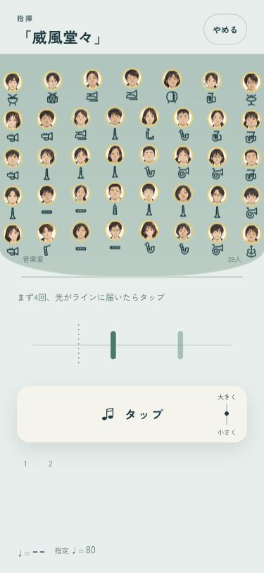
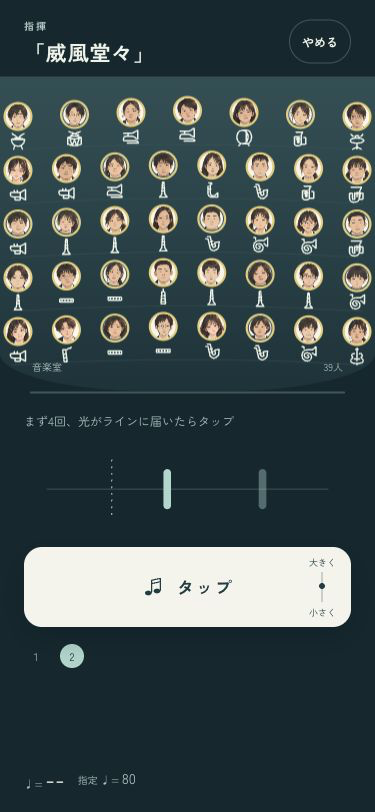
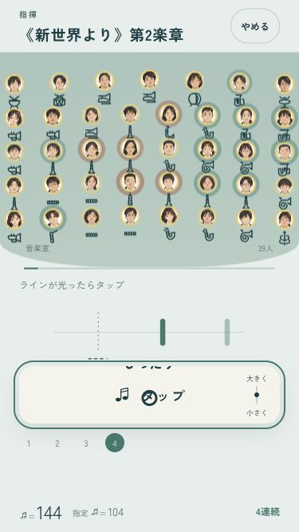
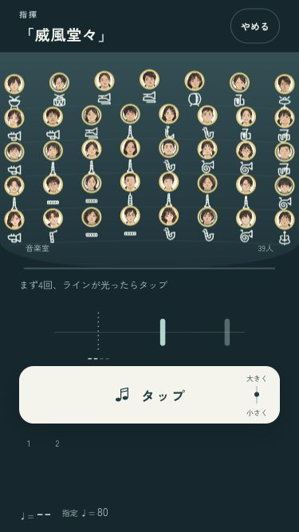

B · 舞台の中へ
39人と、拍を合わせる。
選んだB案をゲームに反映しました。広い舞台の下に、横から届く光と大きなタップ。上・下で音の強弱を変えられます。
確認用の「試す」ではセーブを書き換えません。合奏から「指揮する」で開始できます。


小さい画面と演出を減らす設定


iPhoneへ導入・起動確認済み。ミラーリングなし。実機の画面・音・操作感は端末で確認できます。
codex/design · pushなし · 確認の記録